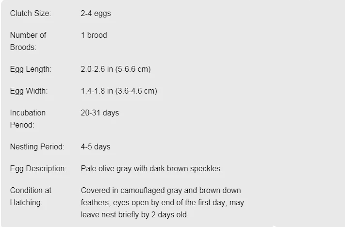

Ring-Billed Gull
This is the common and familiar “seagull” across much of North America yet it is rarely seen offshore. This notably adaptable and bold feeder takes bread from children, soars to catch insects, scavenges at dumps, and even plucks berries from trees. Monotypic. Length 17–20"in; wingspan 44.5–49"in.
Habitat
Ring-billed Gulls are often found in and around urban, suburban, and agricultural areas. In coastal areas, Ring-billed Gulls frequent estuaries, beaches, mudflats, and coastal waters. In winter, these birds are common around docks, wharves, and harbors. Ring-billed Gulls are more commonly seen inland than most other gull species. They can be found at reservoirs, lakes, ponds, streams, landfills, parking lots, and shopping malls.
Diet
Able to thrive on almost any available source of nutrition, Ring-billed Gulls eat mostly fish, insects, earthworms, rodents, grain, and garbage. Common fish prey include alewife, smelt, nine-spined stickleback, and yellow perch; insect meals feature primarily beetles, flies, dragonflies, and bugs. In the western U.S., many Ring-billed Gull populations find most of their food on farm fields, forgoing fish altogether. In addition to their more common fare, Ring-billed Gulls have been known to eat dates, cherries, blueberries, and strawberries, as well as French fries and other food discarded—or left unguarded—by people.
Nesting
Ring-billed gulls nest in colonies numbering from 20 to tens of thousands of pairs. They build their nests on the ground near freshwater, usually on low, sparsely vegetated terrain. They may nest on sandbars, rocky beaches, driftwood, bare rock, concrete, or soil. They often choose sites near or underneath low plants to hide them from aerial predators. Nest sites tend to be used for multiple seasons, by new or returning pairs.
The male and female cooperate in constructing the nest—a scrape in the ground lined with twigs, sticks, grasses, leaves, lichens, or mosses. Some nests are minimalist affairs with almost no lining. The nest's outer diameter ranges from about 10 to 25 inches, with an inner cup about 9 inches in diameter and 2 inches deep. 
by all about birds wepsite
Behavior
Ring-billed Gulls are strong, graceful flyers. They can race along at more than 40 miles per hour, and they're adept at snatching food from the air. You may see these birds hovering, soaring, or poised and stationary in the wind. Adults play by repeatedly dropping objects, then swooping to catch them—perhaps honing their hunting moves. These gulls use a wide variety of foraging methods: walking around on land; stamping their feet in shallow water to uncover small invertebrates; skimming shallow water for small fish; nabbing insects out of the air. They steal food from other birds, hunt for small rodents, and scavenge along beaches, parks, and garbage dumps. Birds in large nonbreeding groups usually space themselves evenly, about 3–6 feet apart. Like many other gull species, when Ring-billed Gulls are feeling aggressive they'll lower their head, begin calling, and then raise their head up to their shoulders. This can escalate to an exaggerated toss of the head over the back while calling. To signal submission, a Ring-billed Gull will draw its head back in toward its shoulders and make shorter, calmer calls, sometimes tossing its head up or away from its opponent as well.
population
Largely disappeared from the Great Lakes region and other areas during late 1800s due to human persecution. Recolonization occurred by 1920s, and populations in the Great Lakes/St. Lawrence River region exploded during 1960s and 1970s. Range still expanding in many areas, and today the ring-billed may be the most populous gull in North America, with an estimated 3 to 4 million individuals (70 percent nesting in Canada).
Are Ring-billed Gull Cannibalism!??
Well there is little doubt about that however, In the Pacific Northwest researchers have noticed a disturbing trend: As sea temperatures rise, plankton have dropped into lower, colder waters; fish have followed the plankton down. Gulls, which can no longer find enough food in shallow waters, have turned to eating each other’s chicks.